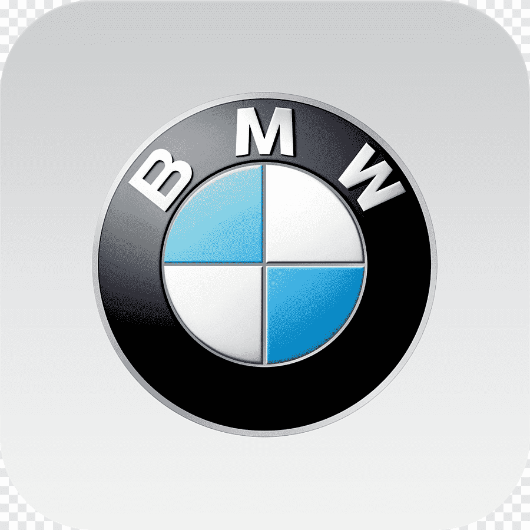
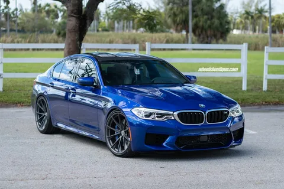
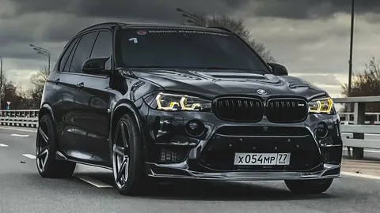
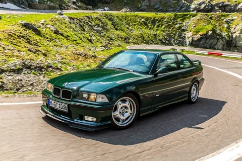
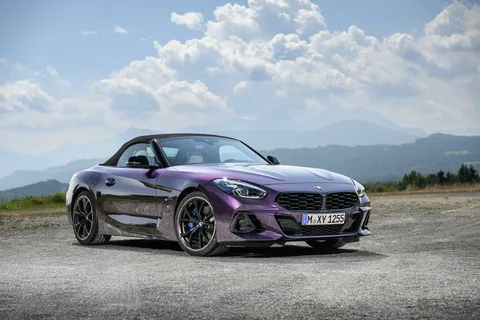

официальный сайт
компании продаж

| BMW официальный сайт компании продаж |
|
 |
BMW
BMW (Bayerische Motoren Werke AG) — это немецкая компания, которая специализируется на производстве автомобилей, мотоциклов и двигателей. Компания была основана в 1916 году в Мюнхене, Германия. Истоки BMW уходят в 1913 год, когда крупный производитель авиационного оборудования «Rapp Motorenwerke» начал разработку летных двигателей. В течение 1930-х годов BMW стала известна благодаря спортивным автомобилям, таким как BMW 328 и BMW 327. В 1950-е годы компания начала производство своих легендарных автомобилей серии "New Class", включающих BMW 1500, BMW 1800 и BMW 2000. Эти автомобили привнесли в марку BMW образцовый немецкий стиль и комфорт, а также отличную динамику и управляемость.
|  BMW M5 f90 |
 BMW X5M |
|---|---|
|  BMW e36 |
 BMW Z4 |
© BMW AG 2023